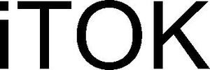

Trade Mark Journal No.2025/020 16 May 2025
WO0000001852475 (7,12)
Office of origin: Germany
Date of International Registration:6 March 2025
Date of designation in the UK:
6 March 2025

International priority date claimed: 12 November 2024
(Germany)
- Class 7
- Couplings [connections], except for land vehicles; couplings, in particular claw couplings, couplings made entirely of metal, geared couplings, bolt tooth couplings, drum couplings, tyre couplings, elastic shaft couplings, and parts of the aforementioned couplings, insofar as included in this class; coupling systems with misalignment compensation function, insofar as included in this class; coupling systems with damping function, insofar as included in this class; coupling systems with misalignment compensation function and damping function, insofar as included in this class; couplings and structural coupling components, each for test benches; connecting shafts with structural coupling components, insofar as included in this class; structural coupling components, insofar as included in this class; flexible couplings, insofar as included in this class; elastic structural drive train components, in particular for machines and vehicles, insofar as included in this class; drive train components with coupling function, insofar as included in this class, in particular comprising tensioning or clamping connections; flexible shaft couplings as structural drive train components of machines and installations; couplings and coupling components in this class, in particular also with damping function; couplings and coupling components in this class, in particular also with misalignment-compensating function; couplings and coupling components in this class, in particular also with damping and misalignment-compensating function; the aforementioned goods in this class, except for machines as such; the aforementioned goods in this class, except for clutches.
- Class 12
- Couplings and coupling components and coupling systems for powertrains and for test benches, insofar as included in this class; couplings, in particular rubber disc couplings, flange couplings, intermediate couplings and parts of the aforesaid couplings, insofar as included in this class; couplings and coupling components for land vehicles, insofar as included in this class; flexible powertrain components for land vehicles, insofar as included in this class; couplings [connections] for land vehicles; torsion shafts for vehicles; damping components for torsion shafts for vehicles, insofar as included in this class; misalignment-compensating components for torsion shafts for vehicles, insofar as included in this class; damping and misalignment-compensating components for torsion shafts for vehicles, insofar as included in this class; coupling components for transmission and reduction gears for land vehicles, insofar as included in this class; the aforementioned couplings and coupling components in this class, in each case in particular also with a damping function; the aforementioned couplings and coupling components in this class, in each case in particular also with a misalignment-compensating function; the aforementioned couplings and coupling components in this class, in each case in particular also with a damping and misalignment-compensating function; the aforementioned goods in this class, excluding clutches; the aforementioned goods in this class, excluding vehicles as such.
Dipl.-Ing. Herwarth Reich GmbH
Representative: Dr.-Ing. Lukas Tanner, RevierIP Patent Law Firm, Neustr. 17, 44787 Bochum, GERMANY